7. Set Theory¶
Modern mathematics is largely founded on set theory: in particular, on what is called Zermelo-Fraenkel set theory with the axiom of Choice, or ZFC. Every concept you have ever learned in mathematics can, in principle, be reduced to expresions involving sets. For example, every natural number can be represented as a set: zero as the empty set, {}; one as the set containing the empty set, {{}}; two as the set that contains that set, {{{}}}; ad infinitum.
Set theory includes the treatment of sets, including the special cases of relations (sets of tuples), functions (single-valued relations), sequences (functions from natural numbers to elements), and other such concepts. ZFC is a widely accepted formal foundation for modern mathematics: a set of axioms that describe properties of sets, from which all the rest of mathematics can be deduced.
7.1. Naive Set Theory¶
So what is a set? A naive definition (which will actually be good enough for our purposes and for most of practical computer science) is that a set is just an unordered collection of elements. In principle, these elements are themselves reducible to sets but we don’t need to think in such reductionist terms. We can think about a set of natural numbers, for example, without having to think of each number as itself being some weird kind of set.
In practice, we just think sets as unordered collections of elements of some kind, where any given element is either in or not in any given set. An object can be a member of many different sets, but can only by in any give set zero or one times. Membership is binary. So, for example, when we combine (take the union of) two sets, each of which contains some common element, the resulting combined set will have that element as a member, but it won’t have it twice.
This chapter introduces naive, which is to say intuitive and practical, set theory. It does not cover axiomatic set theory, in which every concept is ultimately reduced to a set of logical axioms that define what precisely it means to be a set and what operations can be use to manipulate sets.
7.2. Overly Naive Set Theory¶
Before we go on, however, we review a bit of history to understand that an overly naive view of sets can lead to logical contradictions that make such a theory useless as a foundation for mathematics.
One of the founders of modern logic, Gotlob Frege, had as his central aim to establish logical foundations for all of mathematics: to show that everything could be reduced to a set of axioms, or propositions accepted without question, from which all other mathematical truths could be deduced. The concept of a set was central to his effort. His logic therefore allowed one to define sets as collections of elements that satisfy given propositions, and to talk about whether any given element is in a particular set of not. Frege’s notion of sets, in turn, traced back to the work of Georg Cantor.
But then, boom! In 1903, the British analytical philosopher, Bertrand Russell, published a paper presenting a terrible paradox in Frege’s conception. Russell showed that a logic involving naive set theory would be inconsistent (self-contradicting) and there useless as a foundation for mathematics.
To see the problem, one consider the set, S, of all sets that do not
contain themselves. In set comprehension notation, we would write
this set as  That is, S is the
set of elements, a, each a set, such that a is not a member of
itself.
That is, S is the
set of elements, a, each a set, such that a is not a member of
itself.
Now ask the decisive question: Does S contain itself?
Let’s adopt a notation, C(S), to represent the proposition that S
contains itself. Now suppose that C(S) is true, i.e., that S does
contain itself. In this case, S, being a set that contains itself,
cannot be a member of S, because we just defined S to be the set
of sets that do not contain themselves. So, the assumption that S
contains itself leads to the conclusion that S does not contain
itself. In logical terms,  This is
a contradiction and thus a logical impossibility.
This is
a contradiction and thus a logical impossibility.
Now suppose S does not contain itself:  . Being
such a set, and given that S is the set of sets that do not contain
themselves, it must now be in S. So
. Being
such a set, and given that S is the set of sets that do not contain
themselves, it must now be in S. So  The assumption that it does not contain itself leads right
back to the conclusion that it does contain itself. Either the set
does or does not contain itself, but assuming either case leads to a
contradictory conclusion. All is lost!
The assumption that it does not contain itself leads right
back to the conclusion that it does contain itself. Either the set
does or does not contain itself, but assuming either case leads to a
contradictory conclusion. All is lost!
That such an internal self-contradiction can arise in such a simple way (or at all) is a complete disaster for any logic. The whole point of a logic is that it gives one a way to reason that is sound, which means that from true premises one can never reach a contradictory conclusion. If something that is impossible can be proved to be true in a given theory, then anything at all can be proved to be true, and the whole notion of truth just collapses into meaninglessness. As soon as Frege saw Russell’s Paradox, he knew that that was game over for his profound attempt to base mathematics on a logic grounded in his (Cantor’s) naive notion of sets.
Two solutions were eventually devised. Russell introduced a notion of types, as opposed to sets, per se, as a foundation for mathematics. The basic idea is that one can have elements of a certain type; then sets of elements of that type, forming a new type; then sets of sets elements of that type, forming yet another type; but one cannot even talk about a set containing (or not containing) itself, because sets can only contain elements of types lower in the type hierarchy.
The concept of types developed by Russell lead indirectly to modern type theory, which remains an area of very active exploration in both computer science and pure mathematics. Type theory is being explored as an alternative foundation for mathematics, and is at the very heart of a great deal of work going on in the areas of programming language design and formal software specification and verification.
On the other hand, Zermelo repaired the paradox by adjusting some of the axioms of set theory, to arrive at the starting point of what has become ZFC. When we work in set theory today, whether with a naive perspective or not, we are usually working in a set theory the logical basic of which is ZFC.
7.3. Sets¶
For our purposes, the naive notion of sets will be good enough. We will take a set to be an unordered finite or infinite collection of elements. An element is either in or not in a set, and can be in a set at most once. In this chapter, we will not encounter any of the bizarre issues that Russell and others had to consider at the start of the 20th century.
What we will find is that set-theory is a powerful intellectual tool for the computer scientist and software engineer. It’s at the heart of program specification and verification, algorithm design and analysis, theory of computing, among other areas in computer science. Moreover, Dafny makes set theory fun by making it runnable. The logic of Dafny, for writing assertions, pre- and post-conditions, and invariants is set theory, a first-order predicate logic with set and set operators built in.
7.4. Set Theory Notations¶
7.4.1. Display notation¶
In everyday mathematical writing, and in Dafny, we denote small sets by
listing the elements of the set within curly brace. If S is the set
containing the numbers, one, two, and three, for example, we can write
S as 
In Dafny, we would write almost the same thing.
var S:set<int> := { 1, 2, 3 };
This code introduces the variable, S, declares that its type is
finite set of integer (iset<T> being the type of infinite sets
of elements of tyep T), and assigns to S the set value,  Because the value on the right side of the assignment
operator, is evidently a set of integers, Dafny will infer the type of
S, and the explicit type declaration can therefore be omitted.
Because the value on the right side of the assignment
operator, is evidently a set of integers, Dafny will infer the type of
S, and the explicit type declaration can therefore be omitted.
var S := { 1, 2, 3 };
When a set is finite but too large to write down easily as a list of elements, but when it has a regular structure, mathematicians often denote such a set using an elipsis. For example, a set, S, of even natural numbers from zero to one hundred could be written like this: 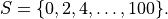 This expression is a kind of quasi-formal mathematics. It’s mostly formal but leaves details that an educated person should be able to infer to the human reader.
It is not (currently) possible to write such expressions in Dafny. Dafny does not try to fill in missing details in specifications. A system that does do such a thing might make a good research project. On the other hand, ordinary mathematical writing as well as Dafny do have ways to precisely specify sets, including even infinite sets, in very concise ways, using what is called set comprehension or set builder notation.
7.4.2. Set comprehension notation¶
Take the example of the set, T, of even numbers from zero to fifty,
inclusive. We can denote this set precisely in mathematical writing as
 Let’s pull this expression apart.
Let’s pull this expression apart.
The set expression, to the right of the first equals sign, can be read in three parts. The vertical bar in the middle is pronounced, such that. To the left of the bar is an expression identifying the larger set from which the elements of the set being defined are drawn: here we are drawing values from the set of all integers. A name, here n, is given to an arbitrary element of this source set. This name is then used in writing a predicate that that defines which elements of the source set are included in the set being defined. That expression is written to the right of the vertical bar. Here the predicate is that n is greater than or equal to zero, less than or equal to fifty, and even (in that the remainder is zero when n is divided by 2).
The overall set comprehension expression is thus read as, T is the set of integers, n, such that n is greater than or equal to zero, less than or equal to 50, and evenly divisible by 2. A more fluent reading would simply be “T is the set of even integers between zero and fifty, inclusive.”
Dafny supports set comprehension notations. This same set would be written as follows:
set t: int | 0 <= t <= 50 && t % 2 == 0
Note that this expression evaluates to a value of type “set of int*. You could assign this value to a variable in a Dafny method by writing
T := set t: int | 0 <= t <= 50 && t % 2 == 0;
You can think of this expression as either pure mathematics, or as a program that loops over the integers, selects those that make the given predicate evaluate to true, and includes all and only the selected elements in the set being defined. That not how it actually works (it’s not possible to actually loop over all integers), but it is as if this is what’s happening “under the hood.”
There are other way to define the same set using set comprehension notation. For example, we can define the set as the set of values of the expression 2*n, where n is in the range zero to twentyfive. Where it’s readily inferred, mathematicians will usually also leave out explicit type information. Here’s what it looks like: `T = { 2 * n | 0 <= n <= 25 }.
In this expression one infers, based on one’s mathematical intuition, that n is intended ranges over the integers or natural numbers. The predicate on the right selects the values from zero to twentyfive. The expression before the bar then builds the values in the set that is being defined by evaluating the given expression for each value of n selected from the source set. Set comprehension notation is sometimes called set builder notation, and here you can see why.
As an aside, we note that practicing mathematicians are usually a bit imprecise in writing math, assuming that the reader will be able to fill in missing details. Of course, such assumptions are sometimes wrong. This course and book show that it is possible, using tools like Dafny and Lean, not only to be formally precise, with tools checking that you haven’t made mistakes.
Dafny supports set builder notation. To express our set in Dafny we could also write this expression:
set t: int | 0 <= t <= 25 :: 2 * t
To read this code, you could say, “the set of values of type integer obtained by first allowing t to range over values from zero to twentyfive any by then multiplying each such t value by 2.”
The source set need not be a built-in type. Given that T is the set of even numbers from zero to fifty, we can define the subset of T of elements that are less than 25 using a set comprehension. In pure mathematical writing, we could write 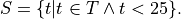 That is, S is the set of elements that are in T (the set of even numbers from zero to fifty) and that are less than 25. Here is a Dafny command assigning this set to the variable, S.
var S := set s | s in T && s < 25;
This code defines S to be the set of integers, s (Dafny infers that the type of s is int) such that s is in the set T (that we just defined) and s is also less than 25. S is thus assigned the set of even integers from zero to twentyfour.
As a final example, let’s suppose that we want to define the set of
all ordered pairs whose first elements are from S and whose second
elements are from T, as we’ve defined them here. For example, the
pair (24,76) would be in this set, but not (76,24). In ordinary
mathematical writing, we’d write a set builder expression like this
 This is read, “the set of
ordered pairs, (s,t), where s is any element of S and t is any
element of T.
This is read, “the set of
ordered pairs, (s,t), where s is any element of S and t is any
element of T.
In Danfy, this would be written using set builder notation, like this:
var Q := set s, t | s in S && t in T :: (s, t);
This code assigns to the new variable, Q, a set formed by taking elements, s and t,, such that s is in S and t is in T, and forming the elements of the new set as tuples, (s, t).
7.4.3. The Empty Set¶
The empty set (of elements of some type, A) is the set containing no elements. In mathematical writing and in Dafny, this set is denoted as {}.
7.5. Set Operations¶
7.5.1. Cardinality¶
By the cardinality of a set, S, we mean the number of elements
in S. When S is finite, the cardinality of S is a natural number.
The cardinarily of the empty set is zero, for example, because it has
no (zero) elements. In ordinary mathematics, if S is a finite set,
then its cardinality is denoted as  . With S defined as in
the preceding section, the cardinality of S is 13, in that there
are thirteen even numbers between 0 and 25.
. With S defined as in
the preceding section, the cardinality of S is 13, in that there
are thirteen even numbers between 0 and 25.
The Dafny notation for set cardinality is just the same. The following code will print the cardinality of S, for example.
print |S|;
If a set is infinite in size, as for example is the set of natural numbers, the cardinality of the set is not a natural number. One has entered the realm of transfinite numbers. We discuss transfinite numbers later in this course. In Dafny, as you might expect, the cardinality operator is not defined for infinite sets (of type iset<T>).
7.5.2. Equality¶
Two sets, S and T are said to be equal if and only if they
contain exactly the same elements. That is,  In mathematical English, you would say, “A
set S is equal to a set T if and only if for every possible value,
x, x is in S if and only if it is in T.
In mathematical English, you would say, “A
set S is equal to a set T if and only if for every possible value,
x, x is in S if and only if it is in T.
In Dafny, you could define a polymorphic set equality operator like this:
predicate set_eq<A(!new)>(S: set<A>, T: set<A>) {
forall x :: x in S <==> x in T
}
This Dafny code defines a predicate, which is to say a proposition with two parameters, S and T, each sets containing elements of type A, where A is any Dafny type. It looks like the mathematical definition except for the annotation, (!new), after the declaration of the type parameter.
All that said, we don’t need to define our own set equality operator, as the one that is built into Dafny will do just fine. The proposition that Dafny sets, S and T, are equal would be written, S == T. This expression uses Dafny’s Boolean operator, ==, for comparing values for equality. The expression, S == T evalutes to true if and only if S and T are equal, as defined here.
7.5.3. Subset¶
A set, T, can be said to be a subset of a set S if and only if
every element in S is also in T. In this case, mathematicians
write 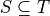. The mathematical definition is that
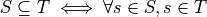. That is, S is a
subset of T if and only if every element in S is also in T. An
equivalent way to write it is,  . That is, S is a subset of T if for
every value, s, if s is in S then s is also in T, Note that
this does not say that every element of S is in T, but only that if
an element is in S then it is also in T.
. That is, S is a subset of T if for
every value, s, if s is in S then s is also in T, Note that
this does not say that every element of S is in T, but only that if
an element is in S then it is also in T.
Here’s how this definition would be written in Dafny.
predicate set_subseteq<A(!new)>(S: set<A>, T: set<A>) {
forall s :: s in S ==> s in T
}
Dafny provides a built-in subset operator, <=. It looks like the usual “less than or equals” operator, but when applied to sets, as in the expression, S <= T, it returns true if and only if S is a subset of T.
7.5.4. Proper Subset¶
A set S, is said to be a proper subset of T, if S is a subset of T but there is some element in T that is not in S. In our example, S, the set of even natural numbers less than 25, is a proper subset of T, the set of even natural numbers less than or equal to 100.
In the language of mathematical logic, we would write,  or, to emphasize the non-equality of S and T, as,
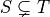.
or, to emphasize the non-equality of S and T, as,
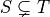.
To futher clarify, S is said to be a proper subset of T if S
is a subset of T and there is at least one element in T that is
not in S. In mathematical language,  . The backwards
E, 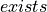, is the existential quantifier in predicate
logic, and is read as, and means, there exists. You this pronounce
this sentence as, “S is a proper subset of T if and only if every
element in S is in T and there exists some element in T that
is not in S.
. The backwards
E, 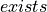, is the existential quantifier in predicate
logic, and is read as, and means, there exists. You this pronounce
this sentence as, “S is a proper subset of T if and only if every
element in S is in T and there exists some element in T that
is not in S.
predicate set_subset<A(!new)>(S: set<A>, T: set<A>)
{
forall s :: s in S ==> s in T && (exists t :: t in T && t !in S)
}
The parentheses in around the exists clause aren’t needed but are included to make it clear how to read, or parse, the expression.
We don’t really have to define our own proper subset operator in Dafny, as Dafny provides one that is built-in. The Dafny expression, S < T returns true if and only if S is a proper subset of T.
Here are some examples of code in Dafny. They assume that The first two of the following assertions are thus both true in Dafny, but the third is not. That said, limitations in the Dafny verifier make it hard for Dafny to see the truth of such assertions without help. We will not discuss how to provide such help at this point.
assert S < T;
assert S <= T;
assert T <= S;
We note every set is a subset, but not a proper subset, of itself. It’s also the case that the empty set is a subset of every set, in that all elements in the empty set are in any other set, because there are none. In logic-speak, we’d say a universally quantified proposition over an empty set is trivially true.
If we reverse the operator, we get the notion of supersets and proper
supersets. If T is a subset of S, then S is a superset of T,
written, 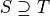. If T is a proper subset of S then
S is a proper superset of T, written  . In
Dafny, the greater than and greater than or equals operator are used
to denote proper superset and superset relationships between sets.
So, for example, S >= T is the assertion that S is a superset of
T. Note that every set is a superset of itself, but never a proper
superset of itself, and every set is a superset of the empty set.
. In
Dafny, the greater than and greater than or equals operator are used
to denote proper superset and superset relationships between sets.
So, for example, S >= T is the assertion that S is a superset of
T. Note that every set is a superset of itself, but never a proper
superset of itself, and every set is a superset of the empty set.
7.5.5. Intersection¶
The intersection of two sets, S and T, written as  , is the set of all elements that are in both sets. Mathematically
speaking,
, is the set of all elements that are in both sets. Mathematically
speaking,  .
.
In Dafny, we could define our own polymorphic set intersection function in only a superficially different way as follows:
Once again, we don’t have to write such code. Dafny’s built-in * operator applied to sets denotes set intersection. The intersection of S and T is written S * T. For example, the command Q := S * T assigns the intersection of S and T as the value of Q. Try it yourself.
7.5.6. Union¶
The union of two sets, S and T, written as  , is
the set of elements that are in either (or both) S and T. That is,
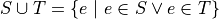.
, is
the set of elements that are in either (or both) S and T. That is,
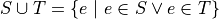.
In Dafny, we would hope to write this as follows:
function union<A>(S: set<A>, T: set<A>): set<A>
{
set e | e in S || e in T
}
Unfortunately, Dafny rejects this definition. It’s not that the definition is wrong, but rather that the implementation of Dafny is incomplete as of the writing of this chapter. As a result, Dafny complains that it cannot determine that the union of S and T is finite, even though it clearly is, as S and T themselves are, and a union of finite sets if clearly also finite. We will have to wait for certain enhancements to Dafny to be able to write this code.
Fortunately, once again, of course, Dafny provides a built-in operator for computing set unions, namely +. The union of sets, S and T, is written S + T. For example, the command V := S + T assigns the union of S and T as the new value of V. Try it!
7.5.7. Difference¶
The difference of sets T and S, written  , is
the set of elements in T that are not in S. Thus, 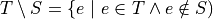.
, is
the set of elements in T that are not in S. Thus, 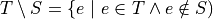.
We could write a Dafny function to specify this operation as follows:
function set_minus<A>(T: set<A>, S: set<A>): set<A>
{
set e | e in T && e !in S
}
Again, we don’t have to. In Dafny, the minus sign is used to denote set difference, as in the expression, T - S. Operators in Dafny can be applied to sets to make up more complex expressions. So, for example, |T-S| denotes the cardinality of T-S. Try evaluating this expression with T and S as defined in the previous section.
7.5.8. Product Set¶
The product set,  , of two sets, S and T*, is
defined ot be set of all the ordered pairs, (s,t), that can be
formed by taking any element, s, from S, and any element, t,
from T. That is,
, of two sets, S and T*, is
defined ot be set of all the ordered pairs, (s,t), that can be
formed by taking any element, s, from S, and any element, t,
from T. That is,  .
.
There actually is no built in product set operator, in Dafny. The good news is that you now know how to express the concept using a set comprehension.
The product set of two sets can be expressed using set comprehension notation: set s, t | s in S && t in T :: (s,t). The keyword, set, is followed by the names of the variables that will be used to form the set comprehension expression, followed by a colon, followed by an assertion that selects the values of s and t that will be included in the result, followed by a double colon, and then, the expression that builds the values of the set being defined: here an ordered pair, or tuple, expression.
We note that the the cardinality of a product set is the product of the cardinalities of the individual sets. Think about why this must be true.
Exercise: Write and test a polymorphic function method in Dafny, called set_product<A,B>, that, when given any two sets, S and T, of elements of types A and B, respectively, returns the product set of S and T. Note that the type of elements in the resulting set is the tuple type, (A, B).
7.6. Tuples¶
A tuple is an ordered collection of elements. The type of elements in a tuple need not all be be the same. The number of elements in a tuple is called its arity. Ordered pairs are tuples of arity, 2, for example. A tuple of arity 3 can be called a (an ordered) triple. A tuple of a larger arity, n, is called an n-tuple. The tuple, (7, X, “house”, square_func), for example, is a 4-tuple.
As is evident in this example, the elements of a tuple are in general not of the same type, or drawn from the same sets. Here, the first element is an integer; the second, a variable;, the third, a string; and last, a function.
An n-tuples should be understood as values taken from a product of n sets. If S and T are our sets of even numbers between zero and one hundred, and zero and twenty four, for example, then the ordered pair, (60,24) is an element of the product set 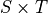. The preceding 4-tuple would have come from a product of four sets: one of integers, one of variables, one of strings, and one of functions.
The type of a tuple is the tuple of the types of its elements. In
mathematical writing, we’d say that the tuple, (-3,4) is al element
of the set  and if asked about
its type, most mathematicians would say pair of integers. In Dafny,
where types are more explicit than they usually are in quasi-formal
mathematical discourse, the type of this tuple is (int, int). In
general, in both math and in Dafny, in particular, the type of a tuple
in a set product, ::S_1 times S_2 times ldots time S_n, where
the types of these sets are
and if asked about
its type, most mathematicians would say pair of integers. In Dafny,
where types are more explicit than they usually are in quasi-formal
mathematical discourse, the type of this tuple is (int, int). In
general, in both math and in Dafny, in particular, the type of a tuple
in a set product, ::S_1 times S_2 times ldots time S_n, where
the types of these sets are  is
is  .
.
The elements of a tuple are sometimes called fields of that tuple. Given an *n-tuple, t, we are often interested in working with the value of one of its fields. We thus need a function for projecting the value of a field out of a tuple. We actually think of an n-tuple as coming with n projection functions, one for each field.
Projection functions are usually written using the Greek letter,
::pi, with a natural number subscript indicating which field a
given projection function ” projects”. Given a 4-tuple, t = (7, X,
“house”, square_func), we would have math::pi_0(t) = 7 and

The type of a projection funcion is function from tuple type to field
type. In general, because tuples have fields of different types, they
will also have projection functions of different types. For example,
 here is of type (in Dafny)
here is of type (in Dafny)  while
while  is of
type
is of
type 
In Dafny, tuples are written as they are in mathematics, as lists of field values separated by commas and enclosed in parentheses. For example t := (1, “hello”, [1,2,3])” assigns to *t a 3-tuple whose first field has the value, 1 (of type int); whose second field has the value, “hello”, a string; and whose third element is the list of integers, [2, 4, 6].
Projection in Dafny is accomplished using the tuple subscripting (as opposed to array or list subscripting) operation. Tuple subscripting is done by putting a dot (period) followed by an index after the tuple expression. Here’s a little Dafny code to illustrate. It defines t to be the triple, (7, ‘X’, “hello”) (of type (int, char, string)), and then usses the .0 and .2 projection functions to project the first and third elements of the tuple, which it prints. To make the type of the tuple explicit, the final line of code declare t’ to be the same tuple value, but this time explicitly declares its type.
var t := (7, 'X', "hello");
print t.0;
print t.2;
var t': (int, char, string) := (7, 'X', "hello");
While all of this might seem a little abstract, it’s actually simple and very useful. Any table of data, such as a table with columns that hold names, birthdays, and social security numbers, represents data in a product set. Each row is a tuple. The columns correspond to the sets from which the field values are drawn. One set is a set of names; the second, a set birthdays; the third, a set of social security numbers. Each row is just a particular tuple in product of these three sets, and the table as a whole is what we call a relation. If you have heard of a relational database, you now know what kind of data such a system handles: tables, i.e., relations.
7.6.1. Power Set¶
The power set of a set, S, denoted  is the
set of all subsets of S, including both the set itself and the empty
set. If S = {1, 2}, for example, then the powerset of S is the set
of sets, { {}, { 1 }, { 2 }, { 1, 2} }. Note that the powerset of a
set with two elements has four elements.
is the
set of all subsets of S, including both the set itself and the empty
set. If S = {1, 2}, for example, then the powerset of S is the set
of sets, { {}, { 1 }, { 2 }, { 1, 2} }. Note that the powerset of a
set with two elements has four elements.
Exercise: Before continuing, write out the elements of the powersets of the sets, { 1, 2, 3 } and { 1, 2, 3, 4 }. How many elements do these powersets have? (What are their cardinalities?) Can you guess a formula for the cardinality of the powerset of a set with cardinality, n? Can you convince yourself that this formula is always right?
The powerset of a set of cardinality n has  elements. To
see that this is always true, first, consider the powerset of the
empty set, then consider what happens when you increase the size of a
set by one element. Start with the empty set. The only subset of the
empty set is the empty set itself, so the powerset of the empty set
has just one element. The cardinality of the empty set is 0. The
cardinality of its powerset is 1. And that is the same as
elements. To
see that this is always true, first, consider the powerset of the
empty set, then consider what happens when you increase the size of a
set by one element. Start with the empty set. The only subset of the
empty set is the empty set itself, so the powerset of the empty set
has just one element. The cardinality of the empty set is 0. The
cardinality of its powerset is 1. And that is the same as
 . Now let’s suppose that our formula holds for any set S,
with cardinality n. What is the cardinality of a set with one more
element? Its powerset contains every set in the powerset of S, as
those are all subsets of the larger set. Then to each of those sets,
we can add the one new element to produce all the new subsets. We thus
have double the original number of subsets. So if the cardinality of
the powerset of S, of cardinality n, was , then the
cardinality of the set S plus one new element is 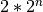,
which is . We know that the powerset of the empty set
has cardinality 1, and from there for each element we add we double
the size of the powerset, so the formula holds for sets of any finite
size!
. Now let’s suppose that our formula holds for any set S,
with cardinality n. What is the cardinality of a set with one more
element? Its powerset contains every set in the powerset of S, as
those are all subsets of the larger set. Then to each of those sets,
we can add the one new element to produce all the new subsets. We thus
have double the original number of subsets. So if the cardinality of
the powerset of S, of cardinality n, was , then the
cardinality of the set S plus one new element is 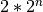,
which is . We know that the powerset of the empty set
has cardinality 1, and from there for each element we add we double
the size of the powerset, so the formula holds for sets of any finite
size!
The rule holds for sets of size zero, and whenver it holds for sets of
size n it also holds for sets of size n + 1, so it must hold for
sets of every (finite) size. What we have here is an informal proof
by induction of the mathematical proposition, that:  .
.
In Dafny, there is no explicit powerset operator, but we know exactly how to implement one of our own. The concept can be expressed in a very elegant way using a set comprehension. The solution is simply to say the set of all sets that are subsets of a given set, *S. In mathematical notation, 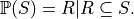 In Dafny it’s basically the same expression.
The follwing three-line program computes and prints out the powerset of S = { 1, 2, 3 }.
var S := { 1, 2, 3 };
var P := set R | R <= S;
print P;
Exercise: Write a polymorphic function method, powerset<A>(S: set<A>) in Dafny that when given a value, *S, of type set<A> returns its powerset. You have to figure out the return type: think “set of sets”.